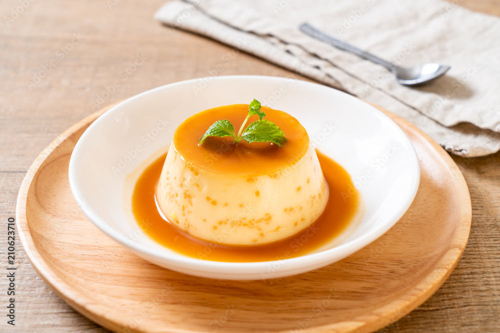
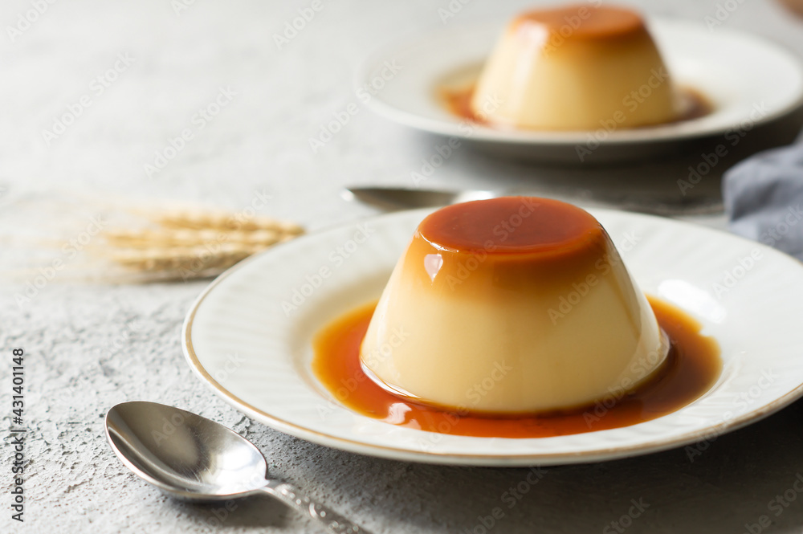
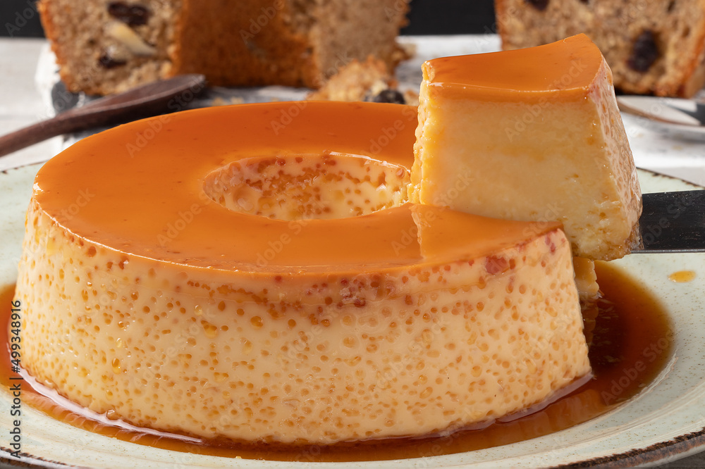
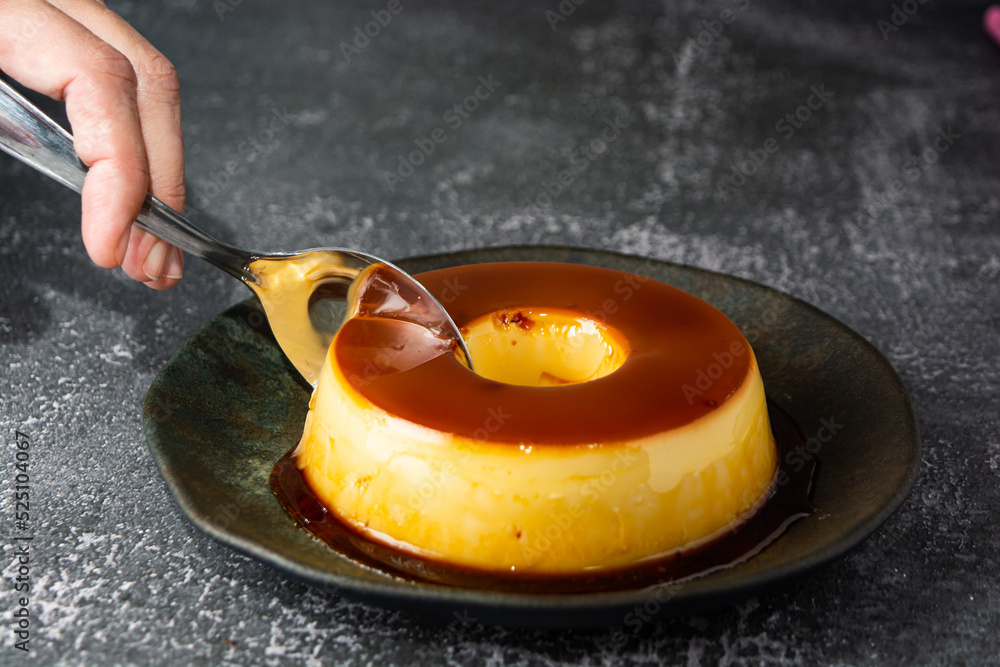
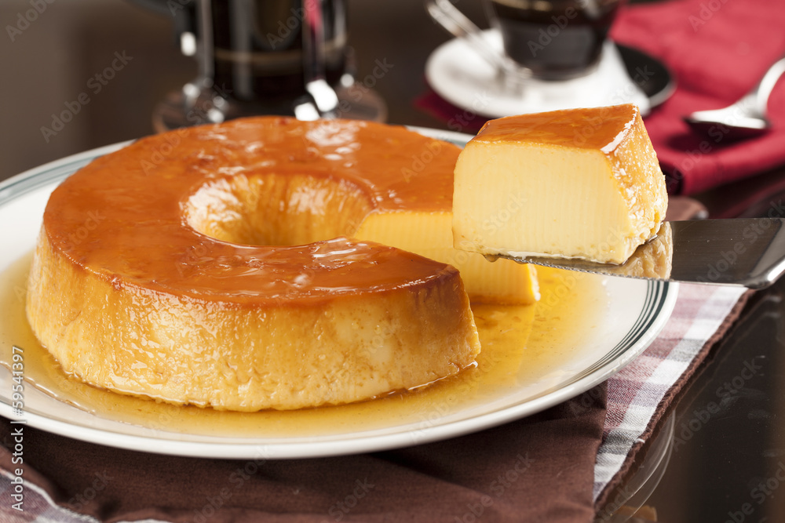
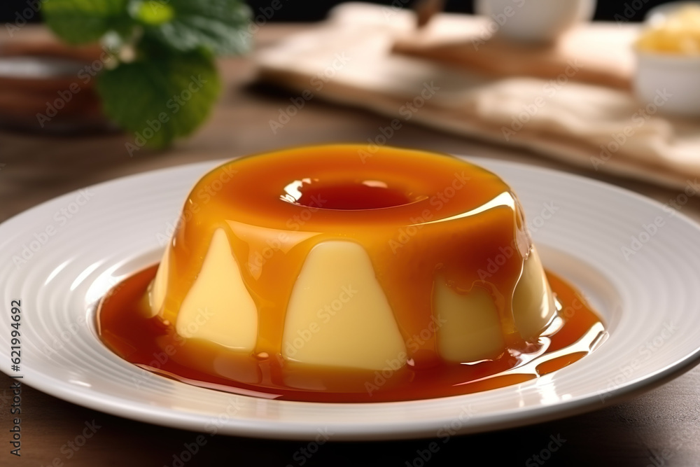

História
O pudim tem origens europeias antigas, com raízes no Império Romano (mistura de ovos, leite e mel) e forte influência de Portugal na sua versão doce conventual. Inicialmente uma receita de toicinho, evoluiu para o clássico de leite condensado, popularizado no Brasil após a introdução deste ingrediente na década de 1930.
- Raízes Antigas: Na Roma Antiga, existia a tyropatina, uma mistura de ovos e leite, muitas vezes preparada com mel, que evoluiu ao longo dos séculos.
- A "Linguiça" Doce: A palavra "pudim" vem do francês boudin, derivado do latim botellus ("linguiça/salsicha"). Originalmente, receitas de pudim (como o haggis escocês) eram cozidas dentro de tripas, similar a um enchido, evoluindo de salgado para doce com o tempo.
- Influência Portuguesa e Conventual: O pudim de leite moderno, rico em gemas, é herança dos conventos portugueses. Uma lenda popular atribui sua criação a um abade português que não revelava a receita, conhecida hoje como Pudim Abade de Priscos.
- Chegada ao Brasil: Trazido pelos colonizadores, o pudim era inicialmente feito com açúcar e nata.
- O Rei do Leite Condensado: O formato atual, com furinhos e calda de caramelo, consolidou-se no Brasil a partir dos anos 1930, quando o leite condensado se tornou popular, substituindo o leite tradicional e açúcar, tornando a receita mais prática e cremosa.
Receita
Quais Ingredientes Usar no Pudim?
- 1 lata de leite condensado
- 1 mesma medida da lata de leite integral
- 3 ovos inteiros
- 1 xícara de açúcar (para a calda)
- ½ xícara de água (para a calda)
Como Fazer Pudim de Leite Condensado Passo a Passo
- Prepare a calda: Em uma panela, derreta o açúcar até formar um caramelo dourado. Acrescente a água aos poucos, mexendo constantemente, até dissolver bem. Despeje essa calda na forma de pudim, cobrindo o fundo e as laterais.
- Misture os ingredientes do pudim: Bata no liquidificador os ovos apenas, por pelo menos 3 minutos direto na velocidade máxima, desligue o aparelho e acrescente o leite e o leite condensado e bata na velocidade média por aproximadamente 1 minuto.
- Coe a mistura: Essa etapa é opcional, mas recomendada para garantir textura lisa, livre de impurezas ou espuma excessiva.
- Despeje na fôrma caramelizada: Com cuidado, coloque a mistura sobre a calda já fria.
- Asse em banho-maria: Cubra com papel-alumínio e leve ao forno preaquecido a 180°C por cerca de 1 hora e 20 minutos.
- Deixe esfriar completamente: Espere atingir a temperatura ambiente antes de levar à geladeira. Refrigere por pelo menos 4 horas antes de desenformar.
Imagens





